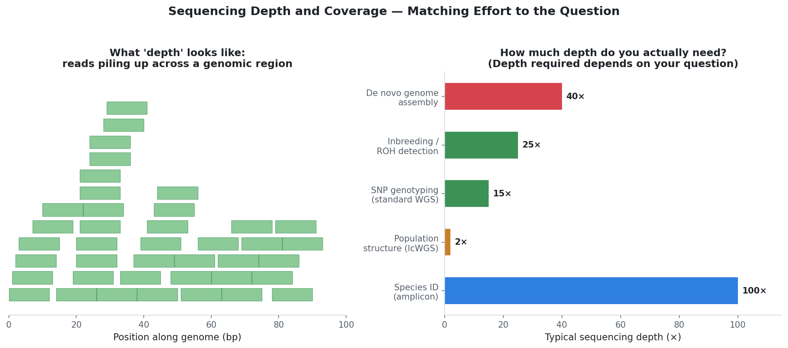
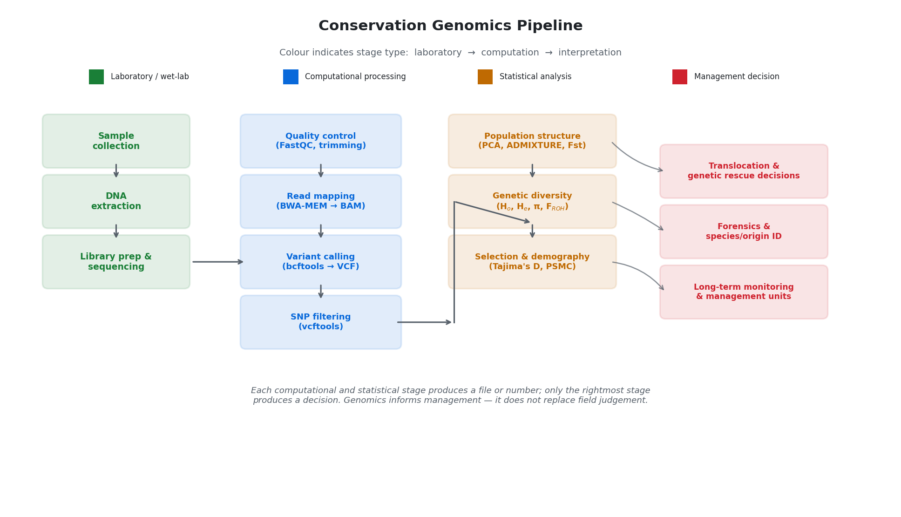
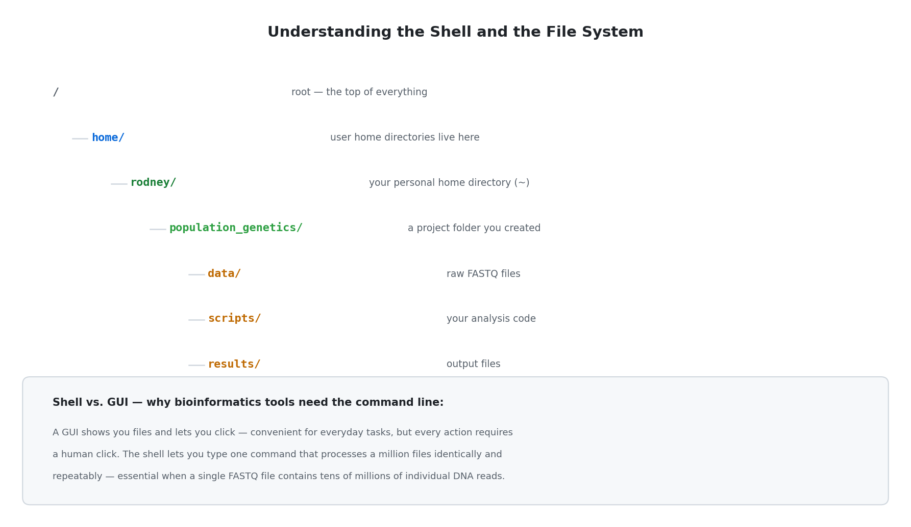
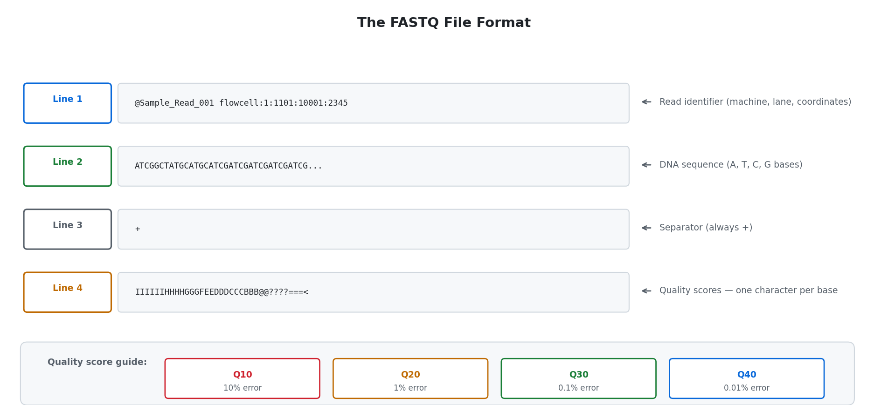
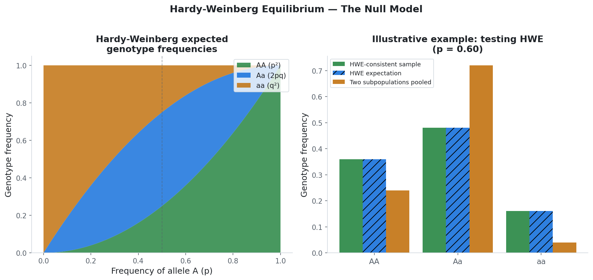
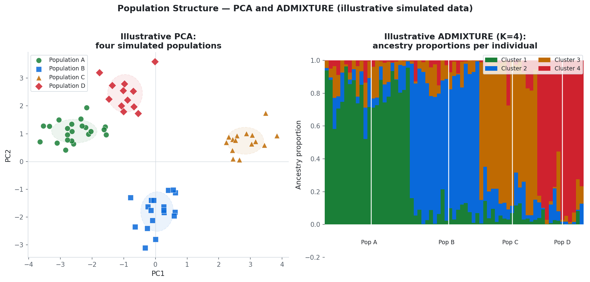
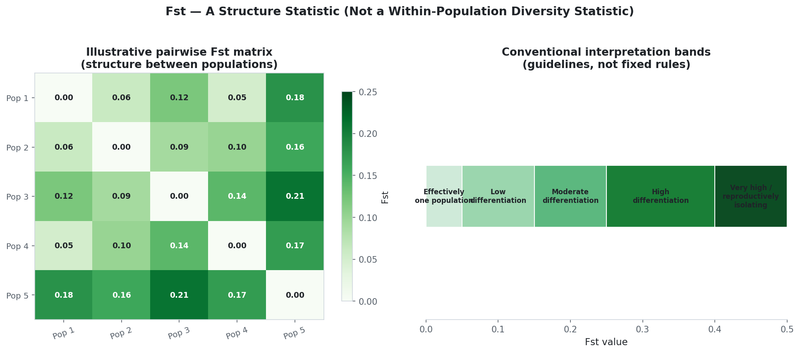
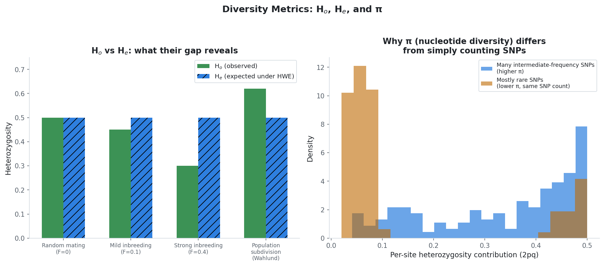
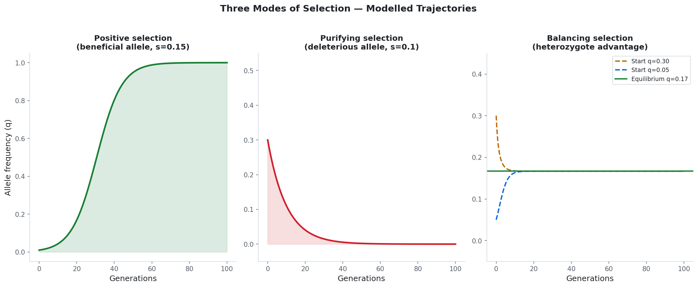
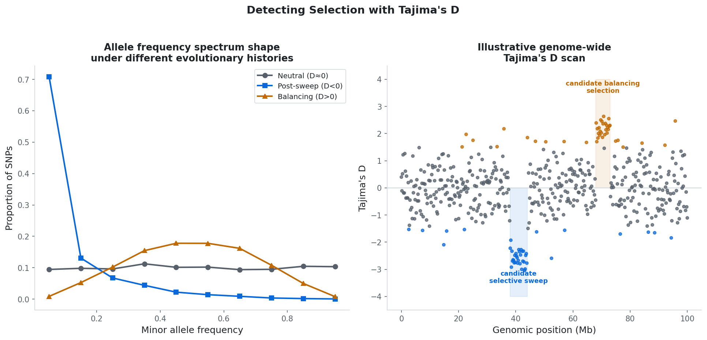

A general-purpose, interactive guide to conservation genomics — from choosing a sequencing strategy to interpreting selection scans — grounded in the theory of Philip Hedrick's Genetics of Populations and illustrated with East African wildlife examples.
You can observe a population for twenty years and never know it is severely inbred, carrying recessive harmful alleles, or genetically isolated from a neighbouring population fifty kilometres away. Genomics makes these invisible patterns measurable.
▸
"Nothing in evolution makes sense except in light of population genetics."
— Michael Lynch (2007), as quoted in Hedrick, Genetics of Populations, Chapter 1 (see Bibliography).
A Worked Thought Experiment
Consider a hypothetical population of 80 animals in a fenced or otherwise spatially isolated conservancy. Field counts look stable. Births are occurring. By every visible measure, the population appears to be doing well. But suppose, hypothetically:
Invisible relatedness
Half the animals are siblings or half-siblings. No field observation reveals this; a runs-of-homozygosity (ROH) analysis detects it directly.
Hidden recessive alleles
A harmful recessive allele could be segregating silently in heterozygous carriers, invisible until two carriers breed.
Unrecognised connectivity
Some individuals may share recent ancestry with a population elsewhere, implying two sites are functionally one management unit.
Census size is not genetic size
If one dominant male sires most offspring, the effective population size (Ne) can be a fraction of the counted population.
Figure 1. Selected Kenyan national parks and conservancies referenced throughout this guide for geographic orientation. Boundary shown is a simplified national outline rather than an official cadastral survey; park markers indicate approximate centroids.
Boundary source: simplified country polygon, public GeoJSON dataset (github.com/johan/world.geo.json).
What Genomics Can Add to Field Observation
Management Question
Genomic Approach
Typical Output
Is this population genetically healthy?
He, π, FROH
Diversity estimates, inbreeding coefficients
Are individuals too related to breed?
Kinship coefficients, ROH
Pairwise relatedness matrix
Should animals be moved between sites?
FST, ADMIXTURE (structure)
Differentiation level, ancestry proportions
Where did a confiscated sample originate?
Population assignment
Likely source population
Is the population adapting or accumulating harm?
Tajima's D, selection scans
Candidate adaptive or deleterious loci
When did a decline begin?
PSMC, GONE (demography)
Ne trajectory through time
Conservation Application
Before commissioning any genomic study, define the management decision it must inform: a breeding recommendation, a translocation, a forensic identification, or a long-term monitoring threshold. The sequencing strategy, sample size, and analysis pipeline should be chosen backward from that decision, not forward from "let's sequence some animals."
Discussion Question 1
Think of a species or population you manage or study. Identify three recurring management decisions. For each: could genomic data improve that decision? What sample type would you collect, and what would you do with the result?
Show brainstorm / key ideas
Translocation decisions: Use FST and ADMIXTURE to identify donor populations distinct enough to add diversity but not so divergent that local adaptation is disrupted.
Breeding pair selection in managed populations: Kinship coefficients from genomic data identify the least-related available pairs — more reliable than incomplete pedigrees for wild-born animals.
Forensic provenance: A population-assignment panel can link a confiscated sample to a likely source population, supporting law enforcement.
Disease risk: Diversity at immune loci can flag populations especially vulnerable to a given pathogen.
Sample types: blood during routine veterinary handling; tissue from mortality events; faeces for non-invasive sampling; hair with follicles from camera-trap-adjacent collection.
Module 1
Choosing How to Sequence
The choice of molecular marker determines which questions can be answered, and at what cost. There is no universally "best" approach — only the most suitable approach for a given question and budget.
Depth, Coverage, and the Amount of Data You Need
Three terms are used constantly in sequencing and are worth defining precisely before anything else, because they directly determine cost and what analyses are possible.
Term
Plain definition
Read
One short fragment of DNA sequence produced by the machine — typically 100–300 base pairs for Illumina.
Depth (at a position)
How many separate reads cover one specific base in the genome. If five different reads overlap position 1,000, the depth there is 5×.
Coverage (genome-wide)
The average depth across the whole genome. "20× coverage" means, on average, every base was read 20 times.
Amount of data
Total sequence generated, usually reported in gigabases (Gb). Amount of data = coverage × genome size. A 2.5 Gb genome at 20× coverage requires 50 Gb of sequence.

Figure 2. Left: a visual illustration of depth — reads (green bars) overlapping the same genomic region. Where many reads stack, depth is high; where few overlap, depth is low and genotype confidence drops. Right: the depth actually required depends entirely on the analysis. Species identification from a short barcode needs very high depth at one small region; population structure across the whole genome can work with very low average depth per individual if enough individuals are sequenced.
▸
Why more depth is not always better: Once you have enough depth to confidently call a genotype (typically 8–15× for a standard diploid SNP call), additional depth on the same individual gives diminishing returns. It is usually more informative to spend a fixed sequencing budget on more individuals at lower depth than on fewer individuals at very high depth — unless the analysis specifically requires individual-level accuracy (see the comparison below).
Platform Comparison: Illumina vs. Oxford Nanopore
Feature
Illumina (short-read)
Oxford Nanopore (long-read)
Read length
150–300 bp
Thousands to hundreds of thousands of bp
Per-base accuracy
Very high (>99.9%)
Lower, though improved substantially with recent chemistries
Portability
Laboratory instrument
Some models are handheld and field-deployable
Best suited to
SNP genotyping, population genomics
Genome assembly, structural variant detection, rapid field identification
Sequencing every part of the genome at sufficient depth (typically 15–30×) to confidently call individual genotypes everywhere.
Attribute
Detail
Typical depth
15–30×
DNA requirement
High molecular weight DNA preferred; fresh blood or tissue
Enables
Individual genotyping, ROH/inbreeding estimation, demographic history (PSMC), de novo assembly
Relative cost
Highest of the four strategies, per individual
Conservation application
Reserve WGS for a small number of representative or flagship individuals where individual-level inbreeding, demographic history, or a reference assembly is required — rather than for large population surveys where lower-cost approaches answer the same structural questions.
Low-Coverage Whole Genome Sequencing (lcWGS)
The entire genome is sequenced, but at low average depth (often 1–5×). Individual genotypes cannot be called reliably at this depth, but population-level allele frequencies, structure, and diversity can still be estimated accurately using probabilistic methods (genotype likelihoods) that account for the uncertainty directly, rather than forcing a hard genotype call.
Attribute
Detail
Typical depth
0.5–5×
Key software requirement
Genotype-likelihood-aware tools (e.g. ANGSD) rather than standard hard-call genotypers
Enables
Population structure, allele frequencies, FST, diversity at the population level
Does not reliably enable
Individual-level inbreeding (ROH), demographic history requiring a single high-coverage genome
⚠
Critical caveat: Applying standard hard-genotype calling to lcWGS data produces systematically biased results — at 1× coverage, a true heterozygote will frequently appear homozygous simply because only one of the two alleles was sampled. Genotype-likelihood frameworks must be used instead.
Conservation application
lcWGS is well suited to large-scale population structure surveys (many tens to hundreds of individuals) on a constrained budget, where the management question is about populations rather than specific individuals.
RAD-Seq (Restriction-site Associated DNA Sequencing)
Restriction enzymes cut the genome at specific recognition sequences; only DNA near those cut sites is sequenced, generating thousands of SNPs from a small, fixed fraction of the genome at relatively low cost.
Attribute
Detail
Genome fraction sampled
Roughly 1–5%, concentrated near restriction sites
SNPs generated
Typically thousands to tens of thousands
Missing data
Often substantial (locus dropout)
⚠
Three caveats that matter for interpretation:
Ascertainment bias: SNPs are not a random sample of the genome — they cluster near restriction sites, which can bias diversity and divergence estimates.
Locus dropout: If a restriction site has mutated in some individuals, those individuals have no data at that locus, inflating missingness and potentially biasing structure analyses if dropout correlates with ancestry.
No demographic history: The contiguous genome needed for PSMC or genome-wide ROH is not available from RAD-Seq data.
Conservation application
RAD-Seq remains a reasonable choice for landscape-scale studies of population structure in non-model species without a reference genome, provided the ascertainment-bias caveat is communicated alongside any diversity comparison across studies or species.
Amplicon Sequencing (Targeted Sequencing)
Specific genomic regions are amplified by PCR and sequenced, used when the loci of interest are already known or when DNA quality is too degraded for any other approach.
Attribute
Detail
DNA requirement
Very low — works from degraded or low-quantity samples
Enables
Species identification, individual forensic panels, monitoring of known adaptive loci
Cannot do
Discover new variants; whole-genome structural or diversity analysis
Conservation application
Amplicon panels are the practical choice for routine forensic species or origin identification (for example, from confiscated wildlife products), where a fixed, validated panel of diagnostic markers is sufficient and turnaround time matters more than genome-wide resolution.
Discussion Question 2
You have a fixed budget sufficient for either (a) 10 individuals at 25× WGS, or (b) 80 individuals at 2× lcWGS, for the same total sequencing cost. Your management question is whether two geographically separated groups of the same species form one interbreeding population or two genetically distinct ones. Which option serves the question better, and why?
Show brainstorm / key ideas
Option (b), lcWGS at 2× on 80 individuals, generally serves this question better. Population structure (FST, PCA, ADMIXTURE) is fundamentally a question about allele frequency differences between groups, which is estimated more precisely with more individuals, even at lower depth per individual.
10 individuals at high depth would under-sample population-level variation — you would have excellent genotypes for very few animals, which limits your ability to detect subtle structure or estimate confidence intervals on FST.
When (a) would be preferred instead: if the question required individual-level inbreeding coefficients, parentage, or a demographic history reconstruction (PSMC) — analyses where depth on each individual genome is the limiting factor, not the number of individuals.
Modules 2–5
The Analysis Pipeline
Every genomics project follows the same core pathway, from raw sequencing reads to a filtered set of variants ready for population genetic analysis.

Figure 3. The complete pipeline from laboratory work (green) through computational processing (blue) and statistical analysis (orange) to management decisions (red). Colour groups stages by type of work, not by arbitrary aesthetic choice: each colour represents a distinct skill set and, often, a distinct person or team responsible for that stage.
Module 2 — The Shell, the File System, and the FASTQ File
What is a shell, and how is it different from what you normally use?
A graphical interface (Windows Explorer, macOS Finder) lets you interact with files by pointing and clicking. A shell (also called a terminal or command line) lets you interact with files and programs by typing text commands. Both ultimately do the same kind of work — moving, copying, running programs — but they differ in one critical way: a GUI requires one human action per operation, while a shell command can be written once and applied identically to a thousand files, or chained together into a repeatable pipeline.
Why bioinformatics cannot rely on a GUI
A single sequencing run can produce a file containing tens of millions of individual DNA reads. No graphical file browser can usefully display, search, or process that many records by clicking. The shell allows a single line of text to count them, filter them, or hand them to a specialised program — and the same line can be reused on the next sample, the next species, or the next thousand files, exactly and without manual repetition.
The file system: directories and paths
Every file on a Linux system lives inside a hierarchy of folders, called directories. The very top of this hierarchy is called the root, written as a single forward slash /. Your personal space within that hierarchy is your home directory, conventionally written as ~ (a shorthand for something like /home/yourname).

Figure 4. A simplified Linux directory hierarchy, from the root down to a typical project folder structure used throughout this guide.
# Where am I right now?pwd# List the contents of the current directoryls-lh# -l = detailed list, -h = human-readable file sizes# Move into a directorycdpopulation_genetics/data# Move up one level, and back to your home directorycd..cd~# Create a new directory (and parent directories if needed)mkdir-presults/qc results/mapping results/variants
Now that the basics are clear: the FASTQ file
The FASTQ file is the direct output of a sequencer and the starting point of every pipeline in this guide. Each DNA read is stored as four lines of text.

Figure 5. Anatomy of a single FASTQ read. Line 4 encodes a Phred quality score for every base in line 2, indicating how confident the sequencer was in that particular base call.
# Count how many reads are in a FASTQ file (divide line count by 4)wc-lsample.fastq# Peek at the first two reads in a compressed file without decompressing itzcatsample.fastq.gz | head-n 8
Conservation application
Before paying for any sequencing run, confirm that you and your collaborators can independently verify file integrity and basic statistics (read counts, file sizes) on receipt of data from a sequencing centre. A five-minute shell check at the start of a project prevents weeks of downstream confusion if a file is truncated, mislabelled, or from the wrong sample.
Discussion Question 3
A FASTQ.gz file is 8 GB in size for paired-end reads, with 150 bp reads, for a species with a 3.1 Gb genome. Estimate the approximate number of reads and the resulting coverage. Is this sufficient for lcWGS population structure work? Is it sufficient for 20× WGS?
Show brainstorm / key ideas
A compressed FASTQ.gz file is typically compressed roughly 3–4×, so 8 GB compressed corresponds to approximately 25–32 GB of raw sequence text.
At roughly 250 bytes per read record (four lines), this is on the order of 100–130 million reads.
This is more than sufficient for lcWGS-based population structure work (which typically needs 1–5×), but well short of the ≈400 million reads needed for 20× WGS of a 3.1 Gb genome.
Module 3 — Quality Control
Before any analysis, raw reads are checked for adapter contamination, low-quality bases, and excessive PCR duplication using FastQC, and then trimmed with Trim Galore.
# Run FastQC on raw readsfastqc--threads 4 -o results/qc/ sample_R1.fastq.gz sample_R2.fastq.gz
# Trim adapters and low-quality basestrim_galore \
--paired \
--quality 20 \
--length 50 \
--cores 4 \
sample_R1.fastq.gz sample_R2.fastq.gz \
--output_dir trimmed/
Conservation application
A quality control failure on a single sample (for example, severe adapter contamination from a degraded faecal sample) should trigger re-extraction or exclusion of that sample, not silent inclusion in downstream analysis. Document QC decisions in a sample tracking sheet so that any later anomaly in results can be traced back to data quality rather than biology.
Module 4 — Read Mapping
Cleaned reads are aligned to a reference genome, assigning each read a chromosomal position, strand, and a mapping quality score reflecting alignment confidence.
# Index the reference genome (one-time operation)bwa index -a bwtsw reference_genome.fasta
# Map paired-end reads; the read group (-R) tag is required for variant callingbwa mem \
-t 8 \
-R"@RG\tID:Sample01\tSM:Sample01\tPL:ILLUMINA" \
reference_genome.fasta \
trimmed/Sample01_R1.fq.gz trimmed/Sample01_R2.fq.gz \
| samtools sort -o aligned/Sample01_sorted.bam
samtools index aligned/Sample01_sorted.bam
# Check mapping statisticssamtools flagstat aligned/Sample01_sorted.bam
▸
Reading flagstat output: a mapping rate above 90% is generally excellent; below roughly 70% suggests a reference mismatch (for example, using a distant relative's genome) or substantially degraded input DNA, and should be investigated before proceeding.
Conservation application
If no reference genome exists for the species of interest, decide explicitly and in advance whether to map against a related species' genome (accepting some loss of sensitivity in divergent regions) or to invest in a de novo assembly. This decision should be made before sequencing, since it affects the recommended depth and read length.
Module 5 — Variant Calling and Filtering
Mapped reads are compared to the reference at every position to identify variants. The raw output contains genuine variants alongside sequencing errors and mapping artefacts, which filtering is designed to separate.
The appropriate filtering stringency depends on the downstream use. A stricter minor-allele-frequency filter is reasonable for population structure analyses, but the same filter would remove exactly the rare, low-frequency variants needed to study deleterious mutation load. Maintain separate filtered datasets for different analysis goals rather than a single "one-size-fits-all" filtered VCF.
Discussion Question 4
After filtering, you have 450,000 SNPs from 45 individuals. A colleague suggests removing all SNPs with minor allele frequency below 0.10 to "improve data quality." Another colleague argues this will bias diversity estimates. For which specific analyses is each colleague correct?
Show brainstorm / key ideas
First colleague is correct for PCA and ADMIXTURE: very rare variants contribute little structural information and are disproportionately likely to be sequencing artefacts.
Second colleague is correct for diversity and selection analyses: nucleotide diversity (π), Tajima's D, and any study of deleterious mutation load specifically depend on rare variants. A MAF filter of 0.10 would remove most of the informative signal for these analyses.
Resolution: maintain two filtered datasets — one with a MAF filter for structure analyses, one without for diversity and selection analyses.
Module 6
Hardy-Weinberg Equilibrium and Population Structure
Hardy-Weinberg Equilibrium — The Null Model
Hedrick (Chapter 2) describes the Hardy-Weinberg principle as foundational because it reduces genotype frequencies to a single parameter, allele frequency p. In a large, randomly mating population with no selection, mutation, migration, or drift, genotype frequencies stabilise after one generation of random mating:
P(A₁A₁) = p² |
P(A₁A₂) = 2pq |
P(A₂A₂) = q²

Figure 6. Left: expected genotype frequencies under Hardy-Weinberg equilibrium as a function of allele frequency. Right: an illustrative numerical example (not from a specific dataset) showing how pooling two genetically distinct subgroups (the Wahlund effect) can mimic a deviation from equilibrium even when each subgroup independently satisfies it.
⚠
The Wahlund effect: if samples from two genetically distinct subgroups are pooled and tested together, the pooled sample can show apparent excess heterozygosity or homozygosity that has nothing to do with mating system or selection — it is a statistical artefact of mixing two allele frequency pools. Always check for, or explicitly test for, hidden structure before interpreting a Hardy-Weinberg deviation as inbreeding.
Conservation application
Use Hardy-Weinberg testing as a diagnostic step early in any project: a locus or sample set with unexpected, widespread deviation often signals either genotyping error or previously unrecognised population structure within what was assumed to be a single sampled group, and should be investigated before any other analysis proceeds.
Population Structure: PCA, ADMIXTURE, and FST
Population structure describes how genetic variation is partitioned between groups, as distinct from genetic diversity, which describes variation within a group. FST belongs to this structure category: it specifically measures the proportion of total genetic variance attributable to differences between populations, not the level of variation within any one of them. A population can have very high internal diversity and still show high FST relative to another equally diverse population, if the two have diverged in allele frequencies.

Figure 7. Illustrative PCA (left) and ADMIXTURE (right) results from simulated data for four hypothetical populations, included to demonstrate how the plots are read rather than to represent any specific real dataset.
Reading a PCA plot for a translocation decision
A PCA collapses genome-wide variation into a small number of axes. The pattern of clustering carries direct implications for translocation planning:
PCA Pattern
Likely interpretation
Translocation implication
Tight, well-separated clusters with no intermediate points
Populations have diverged with little or no recent gene flow
Moving individuals between clusters could introduce useful novel diversity, but should be done cautiously and monitored, since long isolation may mean local adaptations have diverged too
Continuous gradient with no discrete clusters
Isolation by distance — gene flow declines smoothly with geographic distance, no sharp barriers
Movement between geographically close points along the gradient is usually low risk; movement between the extremes of the gradient is more like the discrete-cluster case
One cluster with a few intermediate individuals between two others
Some natural gene flow, hybridisation, or undocumented historical movement
The intermediate individuals' history should be investigated (natural dispersal vs. unrecorded translocation) before using this group as a donor or recipient population
An individual far outside all expected clusters
Possible mislabelled sample, contamination, or a genuinely unusual immigrant
Verify with independent metadata before treating as biologically meaningful
FST in the context of evolutionary forces
FST is shaped by the balance of two opposing evolutionary forces: gene flow (migration), which homogenises allele frequencies between populations and pulls FST toward zero, and genetic drift, which causes allele frequencies to diverge randomly in isolated populations and pushes FST upward over time. Selection can also contribute at specific loci if local conditions differ. A high FST between two populations therefore does not by itself indicate adaptive divergence — it is equally consistent with simple isolation and drift, particularly in small populations where drift is strong.

Figure 8. Left: an illustrative pairwise FST matrix for five hypothetical populations. Right: conventional interpretation bands for FST values. These bands are widely used heuristics, not fixed biological thresholds, and should be interpreted alongside the specific biology of the species and time since separation.
FST range
Conventional interpretation
When to translocate
When not to
< 0.05
Effectively one interbreeding population
Movement is low-risk from a genetic-incompatibility standpoint
Translocation is unlikely to be necessary purely for genetic reasons
0.05 – 0.15
Moderate differentiation, likely with some historical gene flow
Often the most useful range for genetic rescue — enough difference to add diversity, not so much that incompatibility is likely
—
0.15 – 0.25
Substantial differentiation
Consider only with caution, and ideally pilot with a small number of individuals while monitoring offspring fitness
Avoid as a routine, large-scale strategy without evidence on outcomes
> 0.25
Strong differentiation, approaching distinct evolutionary units
Generally avoid
Risk of outbreeding depression (loss of fitness from disrupting co-adapted gene complexes or local adaptation) is elevated
Conservation application
Before any translocation, examine both PCA/ADMIXTURE structure and pairwise FST together with whatever is known about the demographic history of both source and recipient populations (Module 8). A translocation plan based on FST alone, without considering whether the differentiation reflects recent isolation (drift) versus long-term local adaptation, risks either failing to add useful diversity or causing outbreeding depression.
Discussion Question 5
Two populations of the same species show FST = 0.18. Population A has a long, well-documented history of natural geographic isolation (a mountain range with no historical gene flow). Population B's apparent isolation only began 15 years ago following a new fence line. Should the same FST value lead to the same translocation recommendation in both cases? Why or why not?
Show brainstorm / key ideas
No, the same FST value should not automatically generate the same recommendation. FST is a snapshot of current differentiation; the management implication depends heavily on how that differentiation arose.
Long-isolated mountain population: Differentiation has likely accumulated over many generations, potentially including local adaptation to specific conditions. FST = 0.18 here may represent genuinely distinct evolutionary trajectories; mixing could risk outbreeding depression.
Recently fenced population (15 years): For most mammals this is only a handful of generations. FST = 0.18 reached this quickly, from a presumably much lower starting point, suggests an unusually small effective population size driving rapid drift — itself a serious conservation concern, separate from the FST value. Local adaptation is unlikely to have had time to develop. Removing the fence or facilitating gene flow may be more appropriate than treating the two sides as distinct management units.
General principle: always interpret a structure statistic together with its demographic context (Module 8) before translating it into a management action.
Module 7
Measuring Genetic Diversity
Diversity describes variation within a population, as distinct from structure (Module 6), which describes variation between populations. Hedrick (Chapter 2) treats the precise measurement of within-population diversity as the central empirical task of classical population genetics; for conservation, it is the primary indicator of a population's capacity to adapt to future change.
Ho, He, and π — Three Related but Distinct Measures
Metric
What it measures
How it is calculated
Ho (observed heterozygosity)
The proportion of sampled individuals that are actually heterozygous at a locus
Direct count: heterozygous individuals ÷ total individuals
He (expected heterozygosity)
The heterozygosity expected under random mating, given the observed allele frequencies
He = 1 − ∑pi² (for two alleles: He = 2pq)
π (nucleotide diversity)
The average number of nucleotide differences between two randomly chosen sequences, per site, across the whole sequenced region
π = average pairwise sequence difference, summed across all compared positions
Why the gap between Ho and He matters
He is calculated purely from allele frequencies and represents a theoretical expectation. Ho is what is actually observed. When Ho is noticeably lower than He, the most common explanations are inbreeding (related individuals mating, producing more homozygotes than random mating would) or population subdivision being analysed as if it were one group (the Wahlund effect, Module 6). When Ho exceeds He, possible explanations include heterozygote advantage (Module 9) or sample contamination during genotyping.

Figure 9. Left: illustrative comparison of Ho and He under increasing inbreeding and under population subdivision — in both deviation cases the gap between observed and expected heterozygosity is informative, but the underlying cause differs and must be investigated separately. Right: nucleotide diversity (π) is sensitive to the full allele frequency spectrum, not merely the count of polymorphic sites — a dataset with many rare variants can have a different π value than one with the same number of SNPs but more intermediate-frequency variants.
Why π is often preferred over a simple SNP count, and when He is preferred over π
A simple count of polymorphic sites treats every SNP equally regardless of how common or rare the minor allele is. Nucleotide diversity (π) instead weights each site by how much actual sequence difference it contributes between two random individuals, which makes it comparable across datasets with different numbers of rare variants and is closely connected to the underlying population genetic parameter θ = 4Neμ, useful for demographic inference (Module 8).
He, by contrast, is simpler to compute from genotype data, does not require knowing the full sequence (only allele frequencies at known SNPs), and is the more natural metric when working with marker panels (microsatellites, RAD-Seq, SNP chips) rather than whole-genome sequence data. In practice: report He when working from a defined marker panel, and report π when whole-genome or whole-locus sequence data is available and demographic or selection inference is also planned.
Other diversity metrics
Metric
What it measures
Why it is used
Allelic richness (Ar)
Number of distinct alleles per locus, corrected for sample size (rarefaction)
More sensitive than heterozygosity to recent bottlenecks, because rare alleles are lost from the population before heterozygosity visibly declines
FROH (genomic inbreeding)
Proportion of the genome found in long runs of homozygosity
A direct, individual-level measure of realised inbreeding, not reliant on a (often incomplete) pedigree
Conservation application
When monitoring a managed population over time, track Ho, He, and allelic richness together rather than any single metric in isolation. A stable He alongside declining allelic richness is an early warning sign of bottleneck effects that He alone would miss; a widening Ho–He gap is an early warning sign of increasing inbreeding before it becomes visible in any phenotypic trait.
On case studies in this section: well-documented, publicly available conservation genomics studies with verifiable findings exist for numerous species, including cheetahs and grey wolves discussed below. Where this guide presents specific numeric examples without an underlying verified study, this is stated explicitly as a hypothetical illustration, consistent with the convention used throughout this document.
Hypothetical Example
A Small, Fenced Population — Hypothetical Diversity Trajectory
Consider a hypothetical population of a large herbivore established from approximately 20 founders in a fenced conservancy 40 years ago (roughly 8–10 generations for a species with a 4–5 year generation time). In this hypothetical scenario, He might decline gradually from an initial 0.65 toward 0.45 over this period as founder-derived alleles are lost through drift in a closed population with no immigration, while Ho could fall further still if even modest sibling-level mating has occurred. This pattern — gradual He decline combined with a widening Ho-He gap — is the genomic signature that would justify considering genetic rescue via introduction of unrelated founders, the topic developed further in Module 9.
This is an illustrative, hypothetical scenario constructed to demonstrate the expected genomic signature of founder effect and isolation. It is not based on a specific published dataset. For real examples of this pattern, conservation genetics literature on island and fenced reserve populations (e.g. studies of Channel Island foxes or fenced South African game reserve antelope) provides documented case studies; readers should consult the primary literature directly and verify findings before citing specific figures.
Discussion Question 6
A population shows stable He over 15 years of monitoring, but allelic richness has declined by 20% over the same period. Explain why these two metrics can diverge, and what additional analysis would help determine whether intervention is warranted.
Show brainstorm / key ideas
Why they diverge: He is dominated by common alleles (the 2pq term is maximised at intermediate frequencies), so it changes slowly even as rare alleles are lost. Allelic richness counts every distinct allele equally, so it is much more sensitive to the loss of rare variants — exactly what happens first in a population experiencing genetic drift in a reduced effective population size.
What this divergence suggests: the population is likely losing rare alleles steadily, which is an early sign of declining Ne, even though the more commonly reported He statistic has not yet shown it.
Recommended follow-up: estimate Ne directly using a method appropriate to the available data (GONE for recent trends, or a temporal method comparing allele frequencies between the earliest and most recent samples) rather than relying on He alone to judge population health.
Module 8
Demographic History
Patterns of heterozygosity and linkage disequilibrium recorded in the genomes of living individuals carry information about ancestral population sizes reaching back thousands of generations. Two complementary tools are commonly used to reconstruct this history.
Tool
Time range
Input
What it detects
PSMC
Roughly 1,000 to over 1,000,000 years
One individual, high-coverage whole genome
Ancient bottlenecks, expansions, species divergence
GONE
Roughly 1 to 200 generations
Many individuals, SNP data
Recent, management-relevant Ne decline
Conservation application
PSMC and GONE answer different management questions on different timescales. PSMC explains long-term evolutionary context — whether current low diversity is an ancient, largely unavoidable legacy or a recent, human-driven event. GONE answers the more urgent operational question: is effective population size declining right now, even while the census count looks stable? The two should be used together, not interchangeably.
A Documented Case: Genetic Collapse in the Isle Royale Wolf Population
Documented case study
Isle Royale Grey Wolves — A Well-Studied Example of Genetic Deterioration in Isolation
Grey wolves colonised Isle Royale, an island in Lake Superior, via an ice bridge in the late 1940s and remained isolated thereafter. Over subsequent decades the population repeatedly experienced extreme inbreeding, a documented high prevalence of a vertebral malformation associated with inbreeding depression, and a final population collapse to two closely related individuals by 2016–2017. This sequence is documented across multiple peer-reviewed publications by Hedrick, Peterson, Adams, Robinson, and colleagues over more than a decade of monitoring, and informed a deliberate genetic rescue intervention — the translocation of unrelated wolves to the island beginning in 2018.
Key sources include: Hedrick, P.W., Peterson, R.O., Vucetich, L.M., Adams, J.R., & Vucetich, J.A. (2014), see Bibliography. Also see: Robinson, J.A., et al. (2019), see Bibliography. Readers are encouraged to locate and verify the current DOI for each paper directly via the journal or a citation database before citing in their own work.
Documented case study
Cheetah — A Well-Documented Historical Population Bottleneck
Whole-genome studies of the cheetah (Acinonyx jubatus) have documented unusually low genome-wide diversity relative to most other mammals, consistent with a severe historical population bottleneck. This pattern has been linked in the genomics literature to demographic contraction in the deeper past (commonly associated with Late Pleistocene climatic change and megafaunal range contractions), distinct from any decline attributable to recent human pressure. The specific timing and severity estimates vary across studies and modelling approaches.
See: Dobrynin, P., et al. (2015), see Bibliography. Readers should consult this and subsequent cheetah genomics literature directly for current consensus estimates, as bottleneck timing estimates are sensitive to mutation rate assumptions and have been refined in later studies.
Hypothetical Example
A Fenced Population with an Unmonitored Sex-Ratio Skew
Consider a hypothetical scenario: a herbivore population behind a predator-proof fence is censused annually at a stable 300–350 individuals over 25 years. Unknown to managers, one or two dominant males have monopolised breeding each generation due to the absence of natural predation pressure that would otherwise have limited tenure length. In this hypothetical case, a GONE analysis might reveal Ne substantially below the census count — for illustration, perhaps Ne ≈ 40–60 against a census of 300–350 — despite stable visible numbers. This illustrates why census stability alone is an unreliable indicator of genetic health, and why periodic genomic monitoring (not only field counts) is recommended for intensively managed, fenced populations.
This is a hypothetical illustrative scenario, not based on a specific published study. The underlying principle — that skewed reproductive sex ratios reduce effective population size below census size — is well established theoretically (Hedrick, Chapter 4) and documented empirically in numerous managed wildlife populations; readers should consult species-specific literature for verified examples.
Discussion Question 7
A PSMC analysis shows a population contraction roughly 50,000 years ago followed by partial recovery. A GONE analysis on the same species shows Ne declining sharply over the last 20 generations. How would you use each finding differently in a management plan this year?
Show brainstorm / key ideas
The PSMC result provides historical context: the population has shown it can recover from contraction before, which is informative but not an action item for this year's management calendar.
The GONE result is directly actionable: a sharp recent decline in Ne warrants immediate investigation into its cause — sex ratio skew, a recent founder event, habitat fragmentation cutting off gene flow — and consideration of intervention before the trend compounds further.
Practical takeaway: PSMC is context; GONE is an early warning system. A management plan should respond primarily to the GONE finding while using the PSMC finding to set realistic expectations about the population's evolutionary resilience.
Module 9
Selection and Genetic Load
Selection is the mechanism of adaptation; in small populations, it is also a mechanism that can fail. Hedrick (Chapter 3) establishes the mathematical framework; conservation genomics applies it directly to population viability.

Figure 10. Modelled allele frequency trajectories under three selection regimes, generated from the standard population genetic equations in Hedrick (Chapter 3) rather than from a specific empirical dataset. Left: a beneficial allele under positive selection (illustrative s = 0.15). Centre: a deleterious allele under purifying selection, declining slowly while rare because recessive alleles are shielded from selection in heterozygotes. Right: balancing selection through heterozygote advantage, converging to a stable equilibrium frequency from two different starting points, parameterised after the classical sickle-cell/malaria model discussed below.
The Critical Threshold: Ne × s
Hedrick (Chapter 4) shows that whether selection or drift dominates the fate of an allele depends on the product of effective population size and the selection coefficient.
Condition
Outcome
Ne × s ≫ 1
Selection is effective: beneficial alleles spread, deleterious alleles are removed
Ne × s ≈ 1
Outcome is stochastic; allele fate is essentially unpredictable
Ne × s ≪ 1
Drift dominates: even harmful alleles can drift to high frequency or fixation
The practical conservation implication: in a population with Ne = 50, only alleles with a selection coefficient greater than roughly 0.02 (a 2% fitness disadvantage) are reliably removed by selection. Alleles with smaller effects accumulate essentially as if they were neutral. As Ne declines, an increasing share of the mutation spectrum becomes invisible to purifying selection — a process that can become self-reinforcing if accumulating mutation load itself reduces fitness and therefore Ne further.

Figure 11. Illustrative Tajima's D analysis. Left: the shape of the allele frequency spectrum differs under neutrality, a recent selective sweep, and long-term balancing selection. Right: a simulated genome-wide scan showing how localised excursions in Tajima's D can flag candidate regions for further investigation. This is a worked illustration of the method, not a result from real sequence data.
Detection Methods Compared
Method
What it detects
Main caveat
Tajima's D
Deviation of the allele frequency spectrum from neutral expectation
Demographic history (bottlenecks, expansions) can produce the same signature as selection — the two are easily confounded
FROH / Runs of homozygosity
Realised inbreeding and exposure of recessive deleterious alleles
Requires reasonably high sequencing depth (commonly cited threshold around 8× or higher) and a contiguous genome
dN/dS
Whether protein-coding change is occurring faster or slower than neutral expectation
Requires comparison between species or lineages; not directly applicable within a single population
Case Studies
Documented case study
Sickle Cell Trait and Malaria — A Long-Documented Case of Balancing Selection
The relationship between the haemoglobin S (HbS) allele and resistance to Plasmodium falciparum malaria is among the most extensively documented examples of balancing selection through heterozygote advantage in the population genetics literature, originating with Allison's classic observational work in the 1950s and refined by subsequent population genetic modelling, including the treatment in Hedrick's textbook itself. Heterozygous carriers (HbA/HbS) show increased resistance to severe malaria relative to homozygous normal individuals (HbA/HbA), while homozygous HbS/HbS individuals suffer sickle cell disease. This fitness trade-off is predicted, under the standard overdominance model, to maintain both alleles at a stable intermediate frequency in populations historically exposed to high malaria transmission, and the qualitative prediction is well supported by the geographic correlation between historical malaria endemicity and HbS allele frequency across Sub-Saharan Africa.
Foundational source: Allison, A.C. (1954), see Bibliography. The quantitative model is presented in Hedrick, P.W. (2010), see Bibliography, Chapter 3. Readers should consult current population genetics or malaria epidemiology literature for region-specific allele frequency estimates rather than relying on any single historical figure.
Hypothetical Example
A Small, Recently Founded Population — Hypothetical Mutation Load Scenario
Consider a hypothetical species reintroduction programme that established a new population from 25 founders five generations ago, now grown to a census size of 200 but with an estimated effective population size of approximately 30, due to high variance in founder contribution. Under the Ne × s framework above, deleterious alleles with selection coefficients below roughly 0.03 would be expected to behave nearly neutrally in this hypothetical population, allowing them to drift upward in frequency over the five generations since founding. This illustrates, in principle, why a young, small founder population can accumulate genetic load even while appearing demographically successful by census counts alone — and why a genomic assessment of inbreeding and mutation load, not census recovery, should guide the timing of any supplementary genetic rescue intervention.
This is a hypothetical illustrative scenario constructed to demonstrate the Ne × s principle from Hedrick (Chapter 4); it is not based on a specific published study or population. For documented examples of mutation load accumulation in small founder populations, see the Isle Royale wolf literature cited in Module 8.
Conservation application
For any population with an estimated Ne below roughly 50–100, genomic monitoring should include an estimate of genetic load (via FROH and, where whole-genome data permits, an excess-homozygous-deleterious-variant analysis) rather than relying on diversity metrics alone. A population can show acceptable heterozygosity while still accumulating a meaningful burden of deleterious homozygous variants, particularly if it derives from a small number of founders.
Discussion Question 8
A reintroduced population has census size N=500 but descends from approximately 25 founders five generations ago, with an estimated Ne of 30. Which deleterious alleles (by approximate selection coefficient) are effectively invisible to purifying selection in this population? What genomic data would you collect first to assess the situation, and what management intervention would the data support?
Show brainstorm / key ideas
Threshold calculation: an allele is effectively neutral when Ne × s < 1, i.e. s < 1/Ne = 1/30 ≈ 0.033. Alleles with a fitness disadvantage below roughly 3% are largely invisible to selection in this population — this includes the great majority of newly arising deleterious mutations, which typically have small individual effects.
Data to collect first: genome-wide SNP data (lcWGS is sufficient for an initial assessment) from a representative sample of the current population, to calculate FROH per individual and estimate current Ne via a method such as GONE, validating the assumed value of 30.
If confirmed: the data would support prioritising genetic rescue (introduction of unrelated, compatible founders) over continued reliance on natural population growth alone, since growth in census size does not by itself restore effective population size or reverse accumulated drift.
Reference
Glossary of Key Terms
Definitions as used throughout this guide, in the context of conservation genomics.
Allele frequency spectrum (AFS)
The distribution of allele frequencies across all SNPs in a dataset. Its shape can reflect population history and selection, though demography and selection can produce similar signatures.
Ascertainment bias
Bias introduced when genetic markers are not a random sample of the genome, as in RAD-Seq or pre-designed SNP panels, potentially distorting diversity and divergence estimates.
Coverage / depth
Depth is the number of sequencing reads covering one specific genomic position; coverage is the average depth across the whole genome. See Module 1 for full discussion.
Effective population size (Ne)
The size of an idealised population that would experience the same rate of genetic drift as the observed population. Frequently much smaller than the census count, due to unequal sex ratio, variance in reproductive success, or population size fluctuation.
FROH
An inbreeding coefficient estimated from the proportion of an individual's genome found in long runs of homozygosity, providing a direct, pedigree-independent measure of realised inbreeding.
FST
A structure statistic measuring the proportion of total genetic variance attributable to differences between populations, shaped by the balance between gene flow and genetic drift (Module 6).
Genetic drift
Random change in allele frequency due to finite population size, strongest in small populations and capable of overwhelming selection on alleles of small effect.
Genetic load
The reduction in mean population fitness below its theoretical maximum, caused by the presence of deleterious alleles, which can accumulate through drift in small populations.
Genotype likelihood
A probability distribution over possible genotypes at a position, used instead of a hard genotype call when sequencing depth is too low for confident direct calling (essential for lcWGS).
Hardy-Weinberg equilibrium (HWE)
The expected genotype frequencies (p², 2pq, q²) in a large, randomly mating population with no selection, mutation, migration, or drift. Deviation can indicate inbreeding, subdivision, or genotyping error.
He (expected heterozygosity)
Heterozygosity expected under random mating given the observed allele frequencies. See Module 7 for the distinction from Ho and π.
Ho (observed heterozygosity)
The directly observed proportion of heterozygous individuals at a locus in a sample.
Linkage disequilibrium (LD)
Non-random association between alleles at different loci, decaying with physical distance via recombination. Used by methods such as GONE to estimate recent effective population size.
Nucleotide diversity (π)
The average pairwise nucleotide difference between individuals, per site, across a sequenced region. See Module 7.
Outbreeding depression
Reduced fitness in offspring resulting from crossing genetically divergent populations, potentially through disruption of co-adapted gene complexes or local adaptation.
Phred quality score (Q)
A measure of base-calling confidence: Q = −10 × log10(probability of error). Q20 corresponds to a 1% error rate; Q30 to 0.1%.
Wahlund effect
An apparent deviation from Hardy-Weinberg equilibrium that arises from pooling samples from genetically distinct subgroups, mimicking inbreeding even when no true inbreeding has occurred.
Reference
Bibliography
Full citation details for sources referenced throughout this guide. Hypothetical examples are not included here, since they are not based on a specific published source; each is labelled and explained individually within its module.
Core Textbook
Hedrick, P.W. (2010). Genetics of Populations, 4th edition. Sudbury, MA: Jones and Bartlett Publishers.
Case Studies Cited
Allison, A.C. (1954). Protection afforded by sickle-cell trait against subtertian malarial infection. British Medical Journal, 1(4857), 290–294.
Dobrynin, P., Liu, S., Tamazian, G., et al. (2015). Genomic legacy of the African cheetah, Acinonyx jubatus. Genome Biology, 16, 277.
Hedrick, P.W., Peterson, R.O., Vucetich, L.M., Adams, J.R., & Vucetich, J.A. (2014). Genetic rescue in Isle Royale wolves: genetic analysis and the collapse of the population. Conservation Genetics, 15(5), 1111–1121.
Robinson, J.A., Räikkönen, J., Vucetich, L.M., Vucetich, J.A., Peterson, R.O., & Wayne, R.K. (2019). Genomic signatures of extensive inbreeding in Isle Royale wolves, a population on the threshold of extinction. Science Advances, 5(5), eaau0757.
Geographic Data
Simplified national boundary polygon for Kenya, public domain GeoJSON dataset. Source repository: github.com/johan/world.geo.json. Used for geographic orientation only; not an official survey boundary.
⚠
A note on verification: this guide was prepared without live access to academic databases or DOI resolvers. Citations above are provided to the best of available knowledge at the time of writing and are believed accurate, but readers should independently verify each reference, including exact volume, page, and DOI details, against the publisher or a citation database (for example CrossRef, PubMed, or Google Scholar) before relying on them in their own work or teaching material.